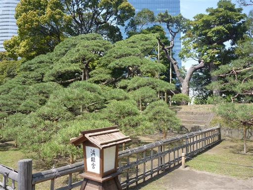
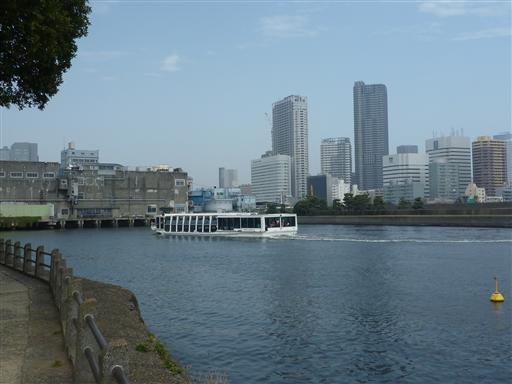
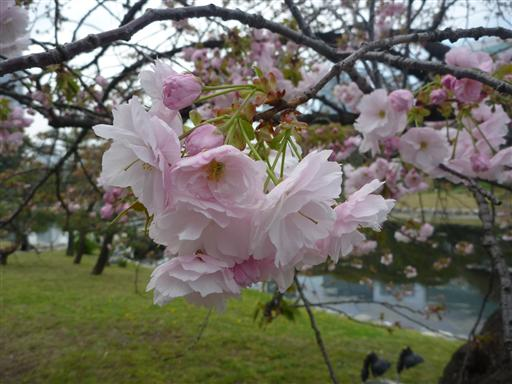
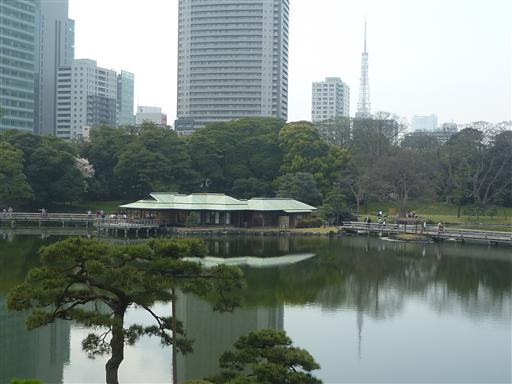
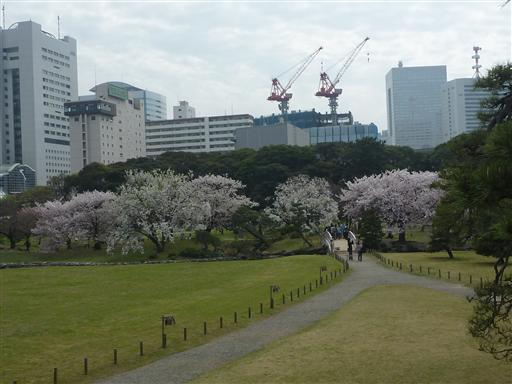
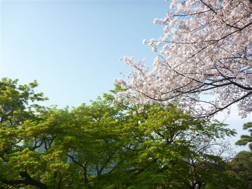
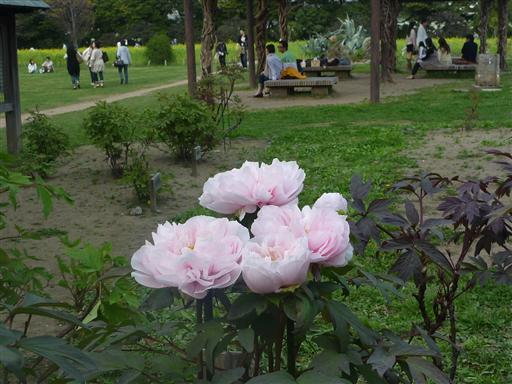
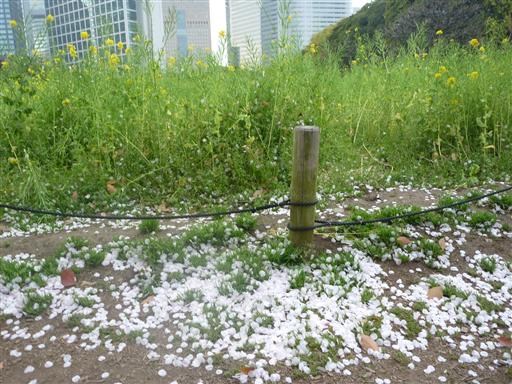

浜離宮恩賜庭園
| 日付 | 2010年4月11日（日） |
|---|---|
| メンバー | 友人（男1女1） |
| アクセス | 電車 |
東京にある浜離宮恩賜庭園に行ってみる。
江戸時代に造られた歴史ある庭園だ。
巨大な松の木。右の方に見えるのが木の幹で、左の方に枝を大きく伸ばしている。

菜の花畑の裏には汐留の巨大ビル群が見える。
一番右の一際大きなビルが電通本社ビルだ。

この公園は水上バスの発着場にもなっている。ここからお台場や浅草まで行けるようだ。

八重桜。花びらがたくさんあって豪華だ。

湖に浮かぶ御茶屋。行ってみると大混雑で行列ができていた。

いくつかの種類の桜が咲いている。桜の下で寝転がって少し休憩。

あまり天気予報は良くなかったが、割と青空が広がっている。
桜と新緑のもみじがきれいだ。

ボタンの花。たくさん植えられていたが、まだ季節が早いのか咲いているのはこれだけだった。

夕方になるとかなりの強風が吹きだして、凄まじい花吹雪となる。風が吹くと少々寒い。
それなりに人は多かったが、比較的広い敷地でよい庭園だった。
